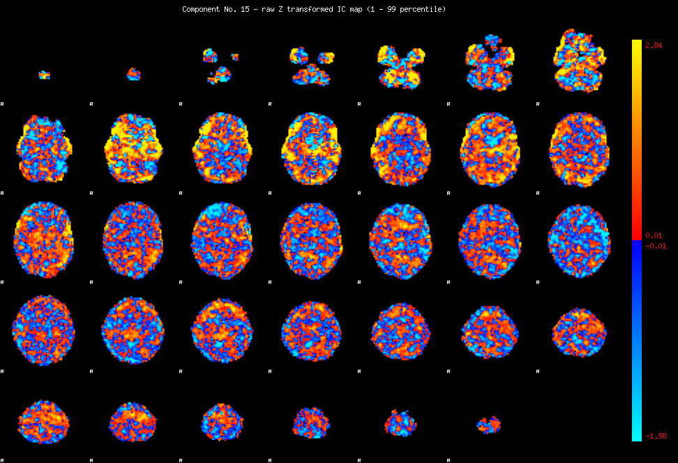
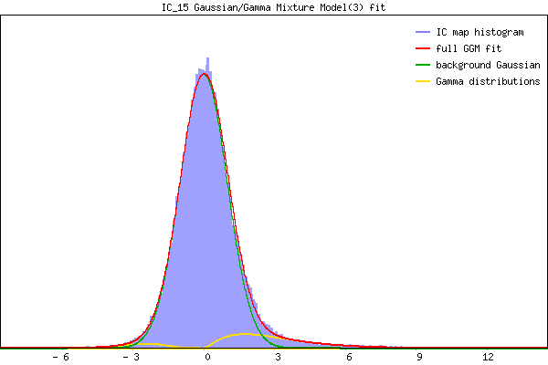

IC_15 Mixture Model fit
Means : 0.000000 2.997534 -2.793279
Vars : 1.000000 3.698000 1.121033
Prop. : 0.913374 0.072499 0.014127
This page produced automatically by MELODIC Version 3.10 - a part of FSL - FMRIB Software Library.